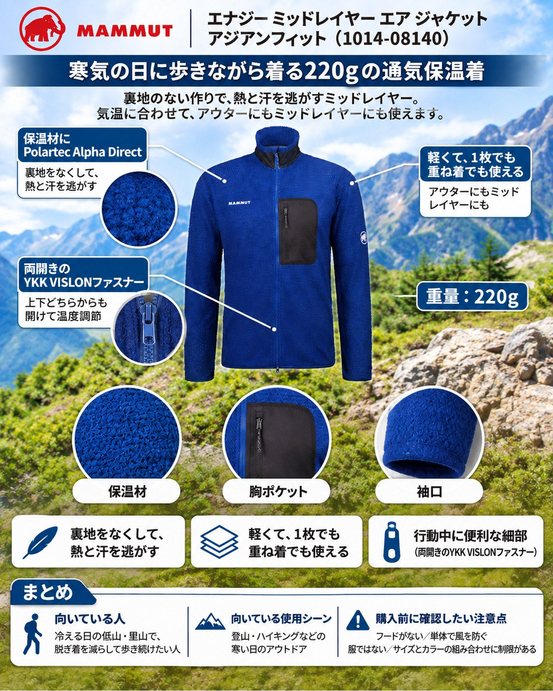

19日からは冬型の気圧配置で一気に冷え込み、高い山は冬山の世界に入ります。紅葉の残る近郊の低山でも、朝の登り始めは寒いのに、歩き出すとすぐに汗ばむ季節です。今回紹介するマムートの「エナジー ミッドレイヤー エア ジャケット アジアンフィット」は、そんな日に「脱がずに歩き続ける」ための保温着です。冷える朝から行動中まで着たままでいたい日帰りハイカーや、シェルの下に入れる薄手の中間着を探している人に向いています。
導入：どんな人・どんな山行に向くか
19日からは冬型の気圧配置で一気に冷え込み、高い山は冬山の世界に入ります。紅葉の残る近郊の低山でも、朝の登り始めは寒いのに、歩き出すとすぐに汗ばむ季節です。今回紹介するマムートの「エナジー ミッドレイヤー エア ジャケット アジアンフィット」は、そんな日に「脱がずに歩き続ける」ための保温着です。冷える朝から行動中まで着たままでいたい日帰りハイカーや、シェルの下に入れる薄手の中間着を探している人に向いています。
基本スペック
※仕様・価格は2026年11月17日時点の表示です。
| 項目 | 内容 |
|---|---|
| 商品名 | エナジー ミッドレイヤー エア ジャケット アジアンフィット（Aenergy ML Air Jacket AF Men） |
| 品番 | 1014-08140 |
| 重量 | 220g |
| 表地 | リサイクルポリエステル78%、ポリエステル22% |
| 保温材 | Polartec Alpha Direct（ライニングなし） |
| フィット | Regular Fit（アジアンフィット） |
| サイズ | XS〜XXL（XXLはblackのみ） |
| カラー | tschiel、black、acacia |
| 価格 | 24,200円（税込） |
裏地をなくして、熱と汗を逃がす
保温材にPolartec Alpha Directを使い、裏地を付けない「ライニングフリー」の作りです。Polartecは自社のAlphaについて、運動量が上がったときは余分な熱を逃がし、止まっているときは保温する「動的保温」をうたい、空気の入れ替えで熱と汗を逃がす通気性や、水分を弾いて湿気をためにくい点を挙げています。保温性を保ちながら高い通気性を確保した点が、この服の持ち味です。
登りで汗をかいては脱ぎ、稜線で冷えては着る、という脱ぎ着の回数を減らしたい人には、この「着たまま歩ける」方向の設計が合います。
軽くて、1枚でも重ね着でも使える
穏やかな気候ではアウター、気温が下がるとミッドレイヤーとして使えます。今週のように寒気が入る日は、ベースレイヤーの上に着て、風や雪が出てきたらレインウェアやハードシェルを上に重ねる、という使い方が基本になります。Polartecは圧縮して持ち運べる点も挙げているので、ザックに入れておく予備の保温着としても扱いやすいはずです。
行動中に便利な細部
フロントは両開きのYKK VISLONファスナーで、上下どちらからも開けて温度を調節できます。胸にはファスナー付きポケットがあり、袖口と裾は伸縮素材で体に沿います。素材はbluesign PRODUCTの認証を受けています。
デメリット・注意点
- フードがない：公式の説明にフードの記載はなく、首から上の保温はできません。寒気の日はニット帽やネックゲイターを別に用意しましょう。
- 単体で風を防ぐ服ではない：通気性を重視した素材の性格上、風の強い稜線や雪の日はシェルを重ねる前提で考えたほうが安心です。これ1枚で冬山に行く服ではありません。
- サイズとカラーの組み合わせに制限がある：XXLはblackのみで、カラーによっては取り扱いのないサイズがあります。購入前に希望の色とサイズの在庫を確認してください。
向いている人・向いていない人
◎向いている人
- 冷える日の低山・里山で、脱ぎ着を減らして歩き続けたい人
- ハードシェルやレインウェアの下に着る、軽い中間着がほしい人
- 汗冷えしやすく、蒸れにくい保温着を探している人
△向いていない人
- 休憩中や山小屋でじっとしているときの暖かさを最優先したい人（ダウンなど休憩用の保温着が向きます）
- フード付きで頭まで覆いたい人
- 1枚で風も寒さも防ぎたい人
まとめ
マムートのエナジー ML エア ジャケットは、裏地のないPolartec Alpha Directで熱と汗を逃がしながら保温する、220gの行動用保温着です。フードがなく、風はシェルで防ぐ前提ですが、そのぶん「冷える朝から着たまま歩く」という役割がはっきりしています。19日からの寒気で山が一気に冬へ向かう今、シェルの下に入れる1枚を見直したい人は候補に入れてみてください。
この記事で紹介した商品
価格・重量・在庫は各ブランド公式サイトの記載（確認日つき）にもとづきます。商品を押すと、購入先を選べます。
この記事にはアフィリエイト広告が含まれます。リンク先での購入により、当サイトが報酬を受け取る場合があります。山行の前には、最新の気象とルートの状況を必ずご確認ください。